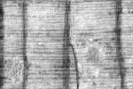
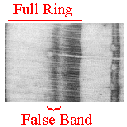
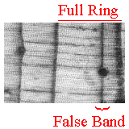

Single Locally Absent Ring:
- Bottom part of this photo has 4 full rings
- Top part of this photo has only 3 full rings
- Wedging ring is "locally absent" from that part of the sample
- This sample is crossdateable, but not by mere ring counting
|

Photo provided by P.R. Sheppard |
| |
Easy False Ring Example:
- This photo has 2 full rings – left-most ring has a false band
- The false band of dark latewood cells fades back to earlywood
- This sample is crossdateable, but not by mere ring counting
|

Photo provided by C.H. Baisan |
| |
Difficult False Ring Example:
- This photo has 2 full rings – right-most ring has a false band
- The false band appears to go through the resin duct
- This sample is crossdateable, but not by mere ring counting
|

Photo provided by C.H. Baisan |